光と音で、
感情が動く瞬間を
デザインする


クライアント：株式会社サンリオ
制作期間：約3か月(2024.09 - 2024.12)
Sanrio Virtual World Award 2024受賞作品
音楽ゲーム × タワーディフェンスを融合した
協力型リズムアクション。
ゲームの企画、チームビルディング、制作を担当。
クリスタルを叩いた時の気持ちよさを追求し、
パーティクルや効果音の演出にこだわりました。
サンリオのIP(マイメロディ＆クロミ)を活用したアニメーションも必見です。
プロジェクト詳細
【企画概要】
サンリオのVRイベント「Sanrio Virtual Festival 2025」に向けたコンテンツ公募企画にて、企画書およびデモゲームを提出し受賞。
その後、株式会社サンリオより開発費・キャラクター3Dモデル・ボイス収録の提供を受け、正式コンテンツとして制作。
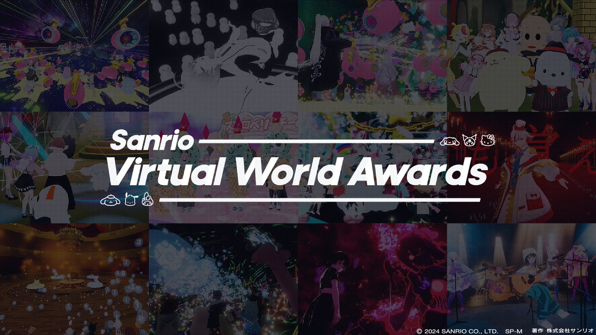
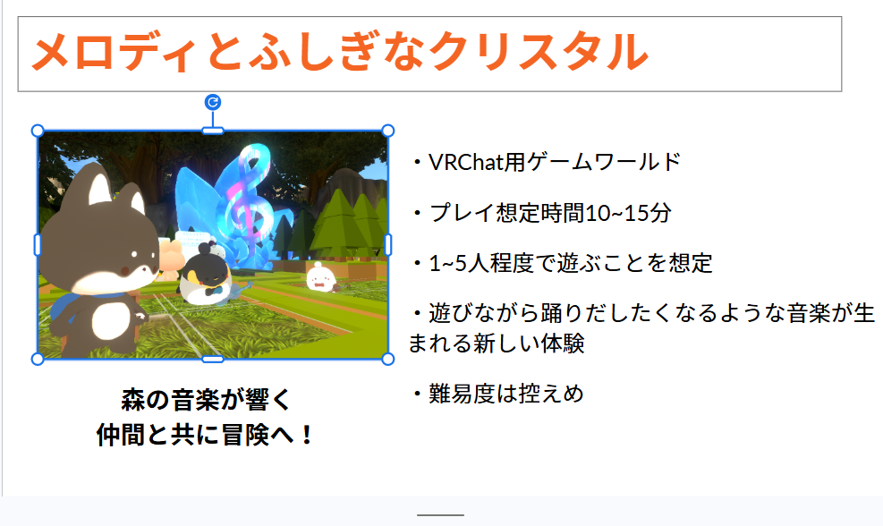
【ゲーム内容】
音楽ゲーム × タワーディフェンスの協力型ゲーム
クロミちゃんに森の大事なメロディクリスタルが奪われないように
みんなでクリスタルをリズミに合わせて叩いて森に返そう！
フィールドに配置した音楽隊も、一緒に演奏してくれるよ！
みんなで協力して森に元気を取り戻そう！
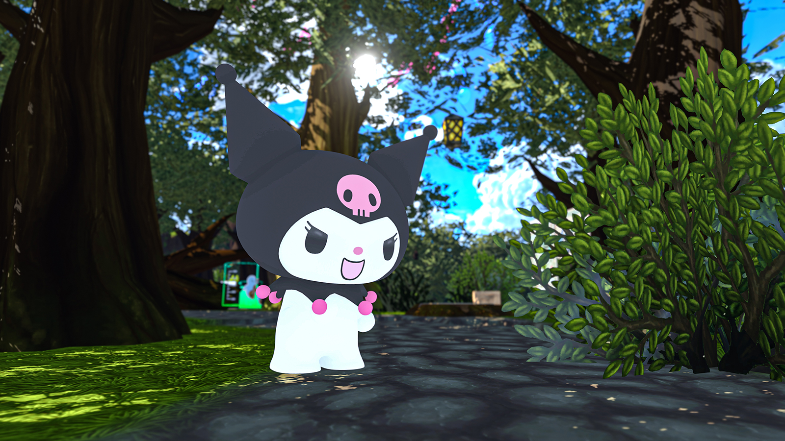
チームメンバー
【私の担当】
- 企画 コアとなるゲームシステム、リズム同期のロジック、全体的な演出フローの設計を担当。
- ゲーム設計 タワーディフェンスと音ゲーを融合させたステージ難易度曲線や報酬系の構築。
- 実装 UdonSharpを用いたゲーム内全システムのコーディング、およびギミック実装。
- シェーダー Amplify ShaderやHLSLを用いた、音楽に同期するクリスタルやエフェクトの制作。
- サウンド制作 Cubaseを用いたBGM制作、および効果音の選定・加工。
【メンバー】
-
企画補助 / 脚本 企画立ち上げ時から手伝ってもらっている。
彼女のアイデアでマイメロディとクロミがテーマのワールドに決定。 -
アニメーション担当 マイメロディとクロミのイベント中のアニメーションを担当。
-
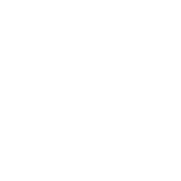
進行管理 / 企画補助 フィードバックを受けて企画を変更時に参加
デスマーチ中の本プロジェクトを救ってくれた人。
ゲームシステム・演出設計
音楽との同期設計
ゲーム内で発生するすべてのイベントを音楽と動機するプログラムを作成、「小節・拍・16分音符単位」で管理。
- 敵のスポーンタイミング
- プレイヤーの攻撃判定処理
- 盤面上キャラクターの演奏アニメーション
- 効果音（SE）の発音タイミング
- パーティクル等のエフェクト再生
すべての挙動をリズムに同期させることで、操作・演出・音が一体となった体験を実現。
音楽と動悸した演出の追加も容易に。
フィードバック設計
ゲームの根幹であるプレイヤーがクリスタルを叩いた時の気持ちよさを最大化するために。叩いた時のエフェクトや効果音をこだわりました。
パーティクル(エフェクト)
全4ステージ ×クリスタル毎に3種のパーティクル
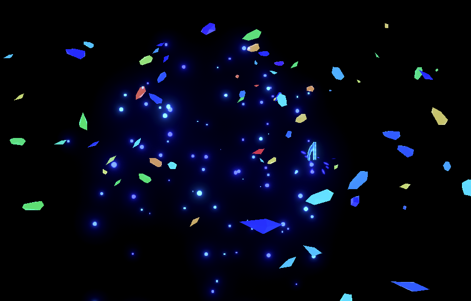
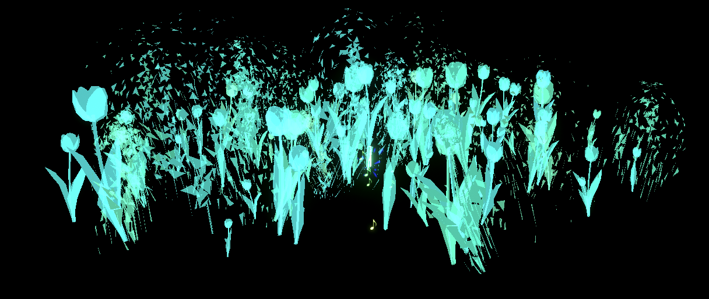
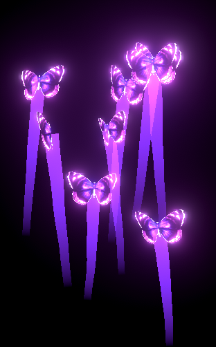
効果音(SE)
ゲームのBGMに合わせて叩くたびに決められたメロディを鳴らすように設計。
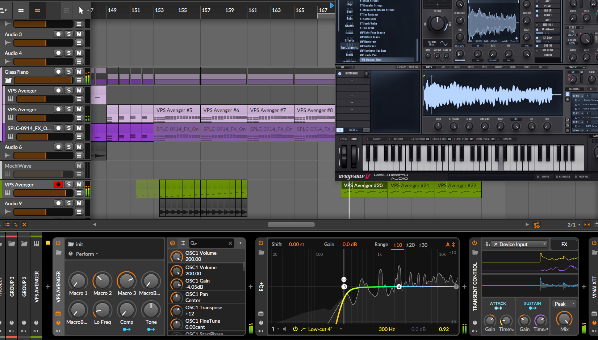
企画の変更
【テスターからのフィードバック】
「あまり良いフィードバックが得られなかった」
何をすればいいかわからない
ストーリーが頭に入ってこない
ゲーム部分が面白くない
企画を大きく変更
【変更点】
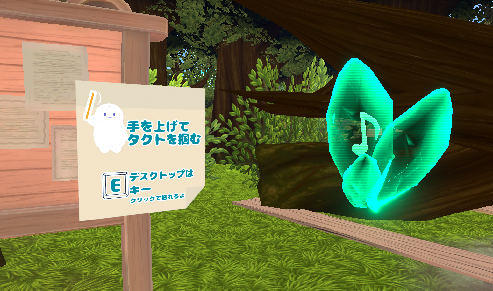
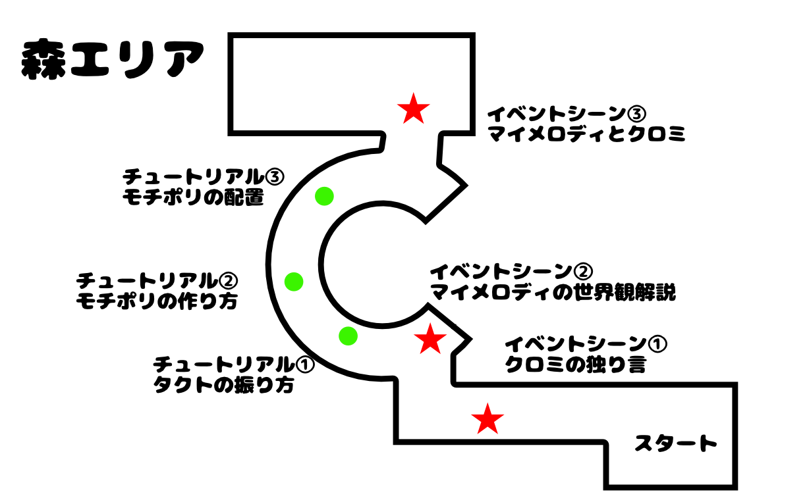
① チュートリアル追加
変更前、開始地点の森エリアはマイメロディとクロミのアニメーションを見せるためだけのエリアだったが、
そこにゲームのチュートリアルを追加、ゲームエリアに移動する前にプレイヤーにゲームのシステムを教える。
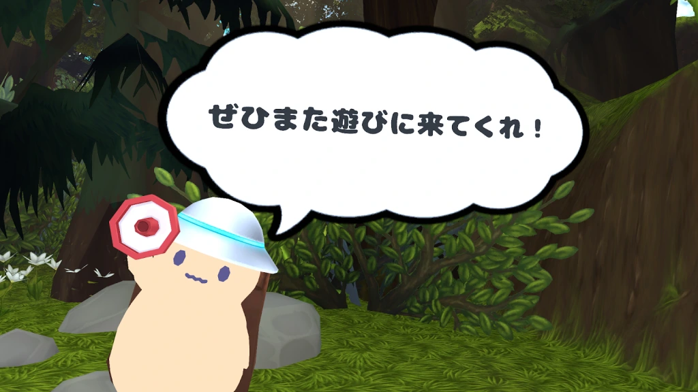
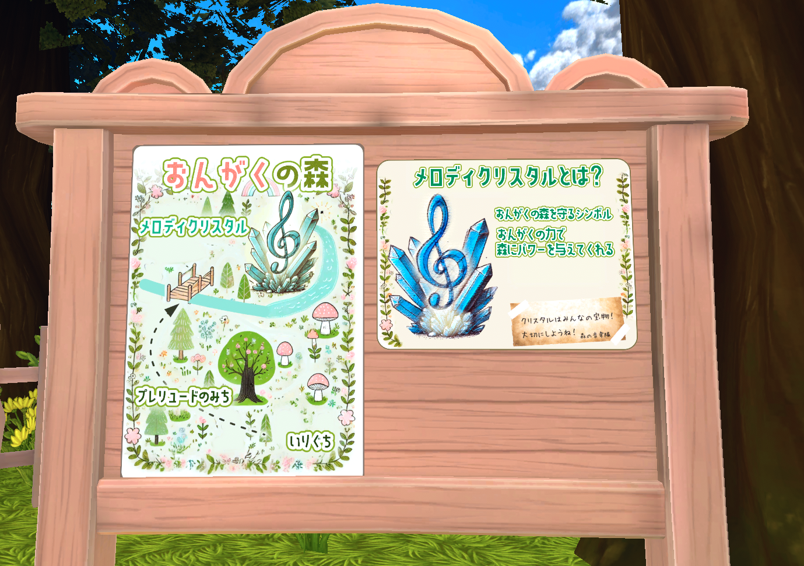
② ナビゲーションキャラ追加
サンリオがVfes用に作成したキャラクター「モチポリ」をナビゲーションキャラに。
おんがくの森に遊びに来たプレイヤーを案内するツアーガイドとしてサポートし、
物語への没入感を向上。
また、ポスターを配置することでテーマであるメロディクリスタルについても自然とプレイヤーに受け入れられるようにした。
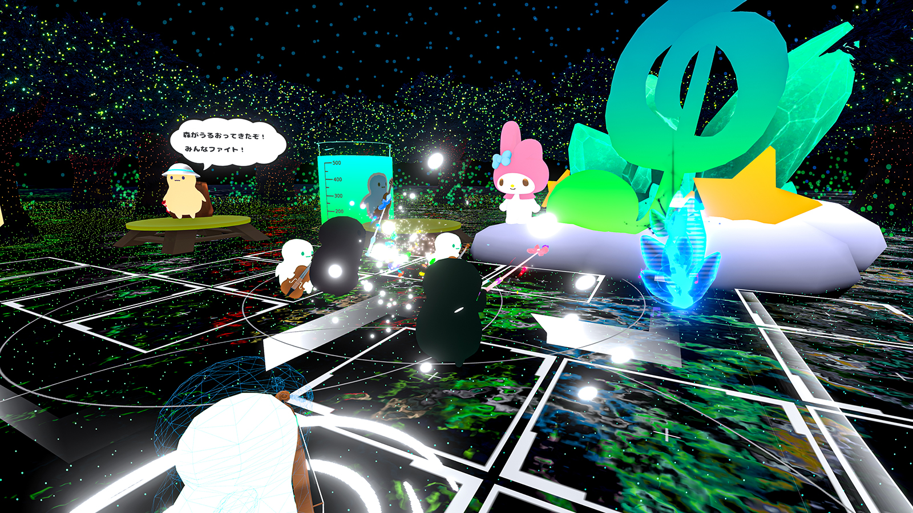
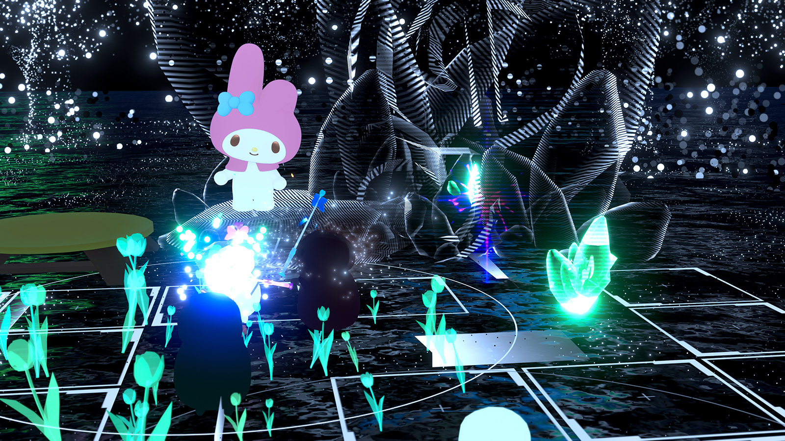
③ ゲーム性の再設計
従来のタワーディフェンスのように
フィールドに配置したユニットが攻撃するのがメインだったのを一新。
音楽に合わせて叩くと楽しいという原始的な楽しさを重視するように変更。
これにより誰でも楽しめるゲームに変更。
成果
【実績】
- サンリオVfes2025にて一ヶ月間公開
- Vfes2026、VirtualPuroLand限定コンテツとして継続して公開
- 累計来場者数 約55,000人
【ローソク@VRC@rosoku_candle】
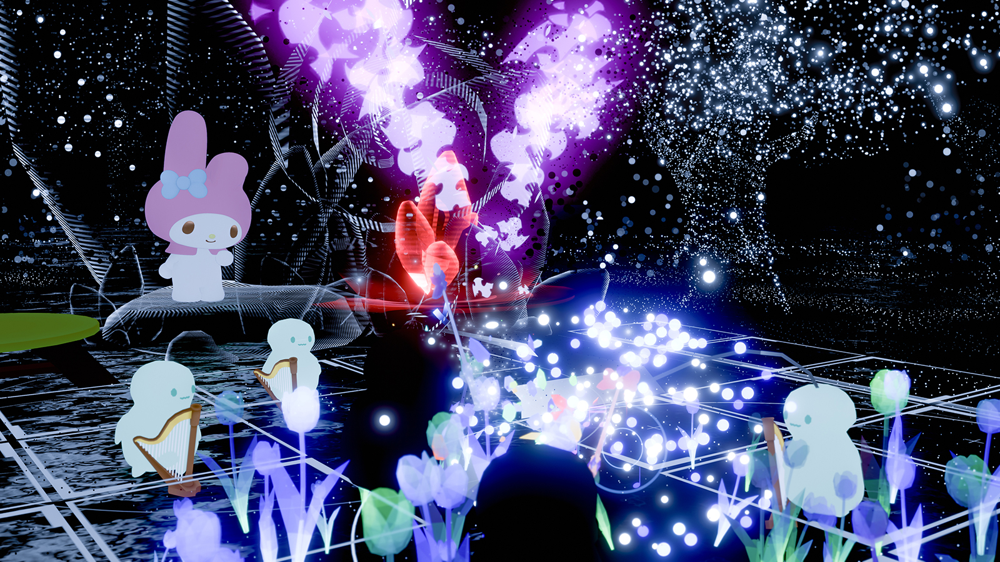
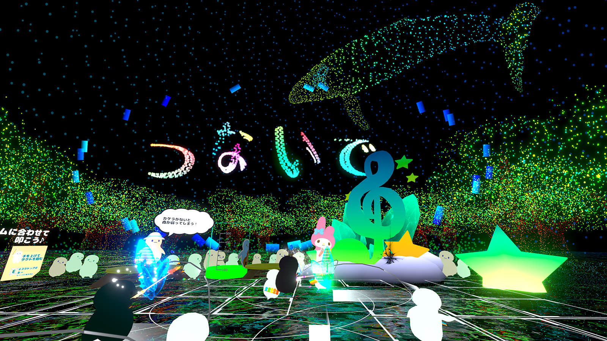
【メタバースイベント「Sanrio
Virtual Festival 2025」体験レポート 4Gamer.net
https://www.4gamer.net/games/794/G079439/20250214049/】
Show by rock
デルミンDJ
クライアント：株式会社サンリオ
制作期間：約2ヶ月 (2025.11 - 2025.12)
サンリオ「SHOW BY ROCK!!」の世界観を再現したワールド内の地下ライブハウスにて、
主要キャラクターの「デルミン」がDJパフォーマンスを行うライブの演出を制作。
30分×2セットの長尺DJライブに対応するため、UnityのTimeline内で効率的な演出制作を設計。
映像・ライティング・パーティクル・シェーダーを統合し、音楽と同期した没入感の高いライブ体験を実現しました。
企画概要とVR空間演出
企画概要

SHOW BY ROCK !! WORLD
SHOW BY ROCK!!の舞台である音楽都市MIDICITYをVR空間に再現した、公式ワールドプロジェクトです。
ユーザーは広大な都市を探索しながら、キャラクターライブやDJショーなど、VRならではの没入感溢れる多彩なエンターテインメントを体験できます。
本プロジェクトにおいて、私は地下ライブハウスで開催されたDJライブの演出制作（照明・パーティクル・Timeline設計）を担当しました。
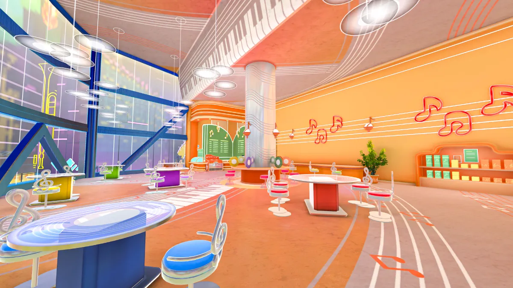
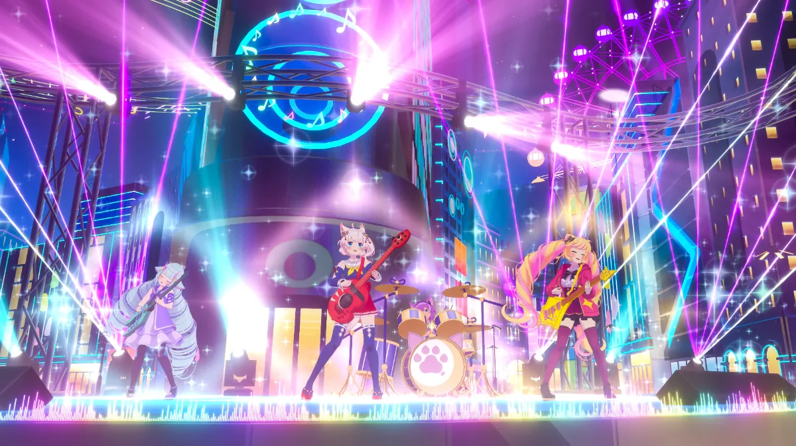
① 長尺に対応するためのTimelineの工夫
30分×2セットのライブ演出を成立させるため、Timeline構成を整理。
シェーダーを書き換え、同一のアニメーションでライト、レーザー、ペンライトをコントロールすることで、効率的に演出を作成。
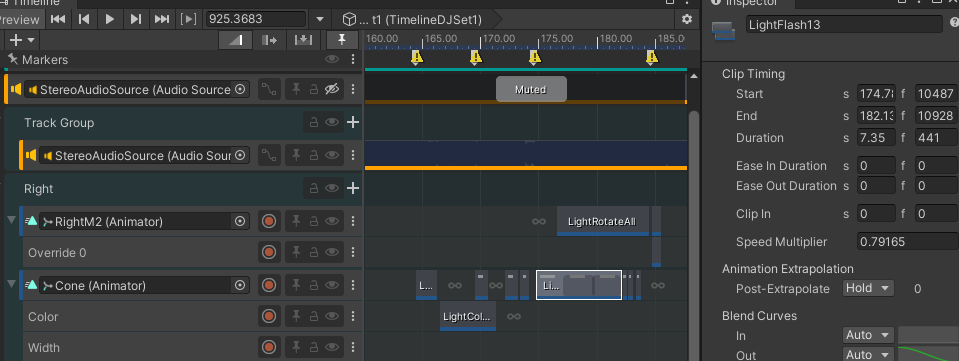
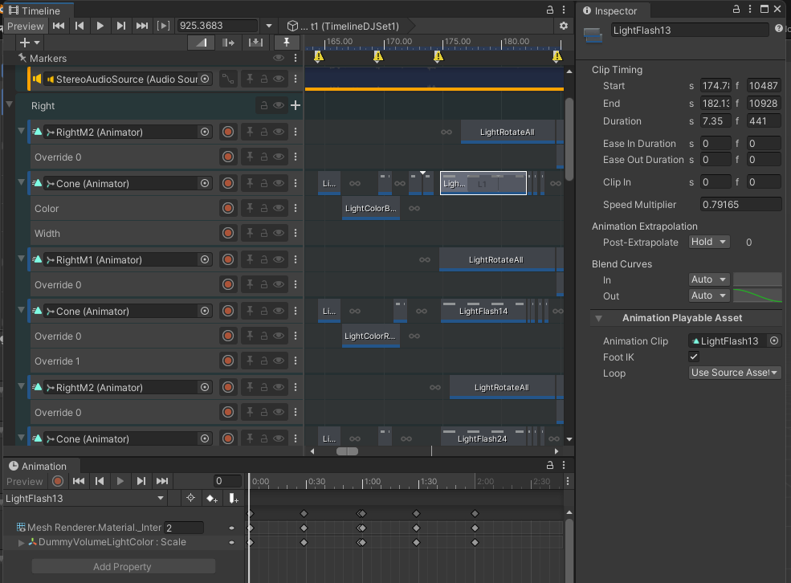
フィードバックを受けての改善
【フィードバック】
チーム内で
ステージ周辺にのみスポットライトやレーザーを配置していたため、VR空間内で実際に体験すると、客席や周辺空間が暗く、寂しい印象になるというフィードバックを受けた。
そのため、以下の点について見直しを行った。
- 客席左右に鏡を配置し、空間の広がりと光の反射を強化
- 鏡の隙間にモニターと連動したライトを設置し、視覚的な情報量を増加
- 客席上部にもスポットライトとレーザーを追加し、空間全体に光の演出を拡張
- 会場全体を覆うようなパーティクル演出を追加し、没入感を向上
- ペンライトを導入し、観客席にも動きと一体感を付加
空間設計の改善
VRならではの壁を取り払い、全面にパーティクルを展開
現実のライブ会場では難しい、視界全体を覆うようなパーティクル演出を実装。
前後左右・天井方向まで空間全体を使うことで、VRならではのスケール感と没入感を演出。
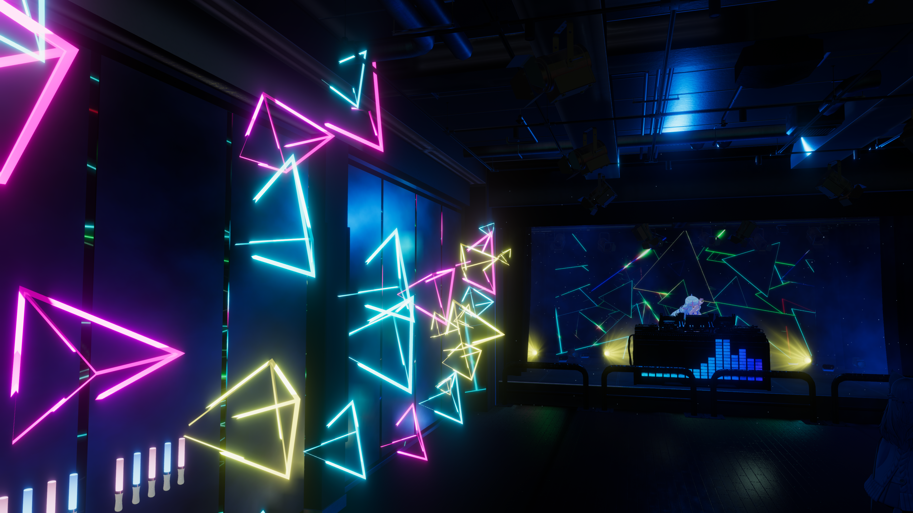
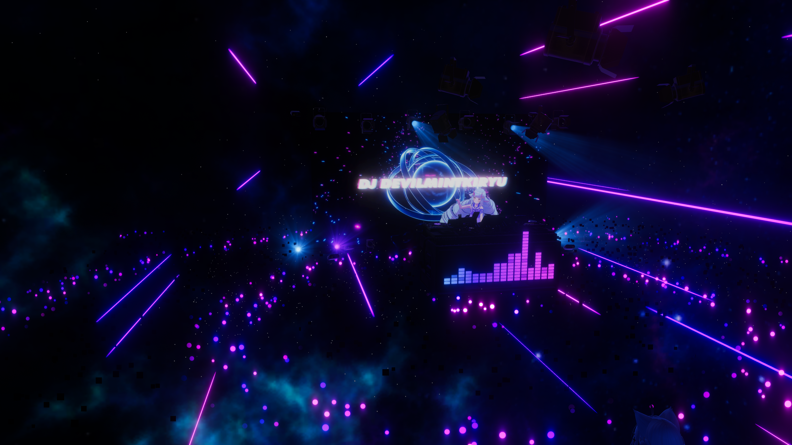
会場を鏡張りにして、映像やレーザーをより美しく演出
Reflection Probeをリアルタイムで更新することで鏡張りの空間を実現し、光が空間全体へ広がる演出を設計。
さらに反射の解像度を調整することで負荷を抑えつつ、魅力的な反射表現を実現しました。
また、鏡の間にモニターと連動したライトを設置することで、ステージだけでなくどの方向を見ても楽しめる空間を演出。
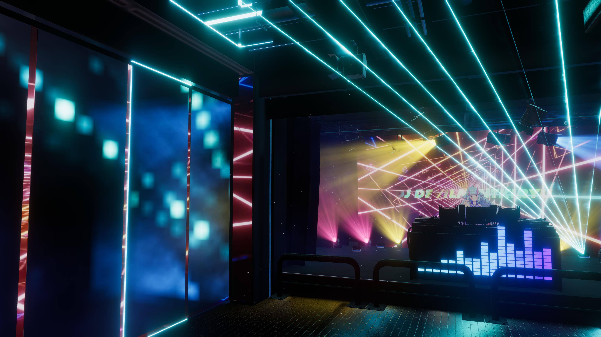
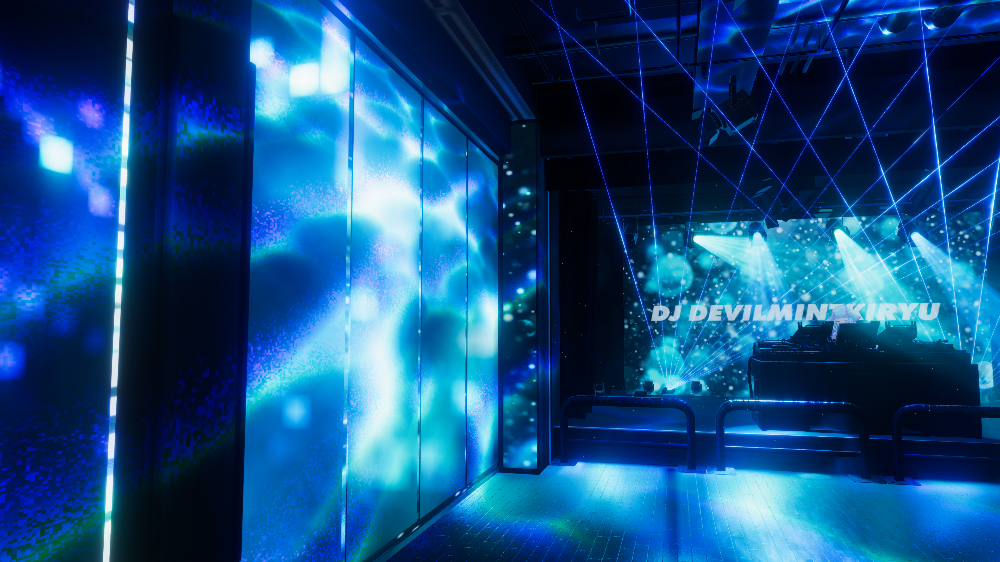
ペンライトを設置し、観客も参加できるライブに
観客席にペンライトを配置し、Timelineと同期制御。
プレイヤーが自発的に楽しめる要素として用意しました。
楽曲に合わせて色を変更し点滅させ、会場全体が一体となる体験を設計しました。
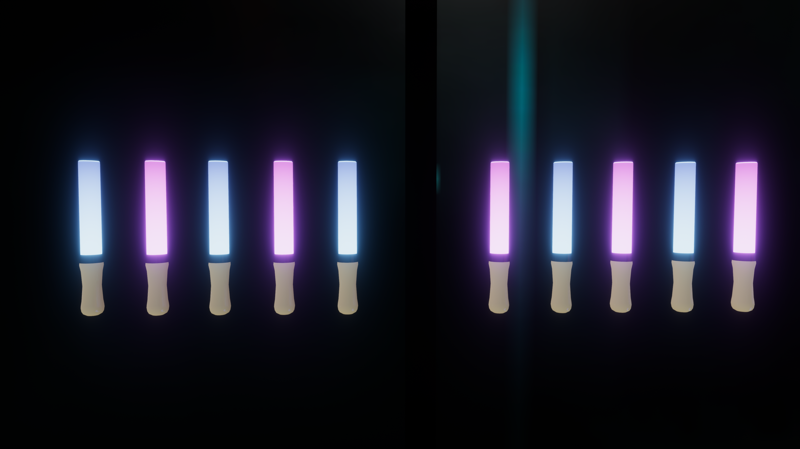
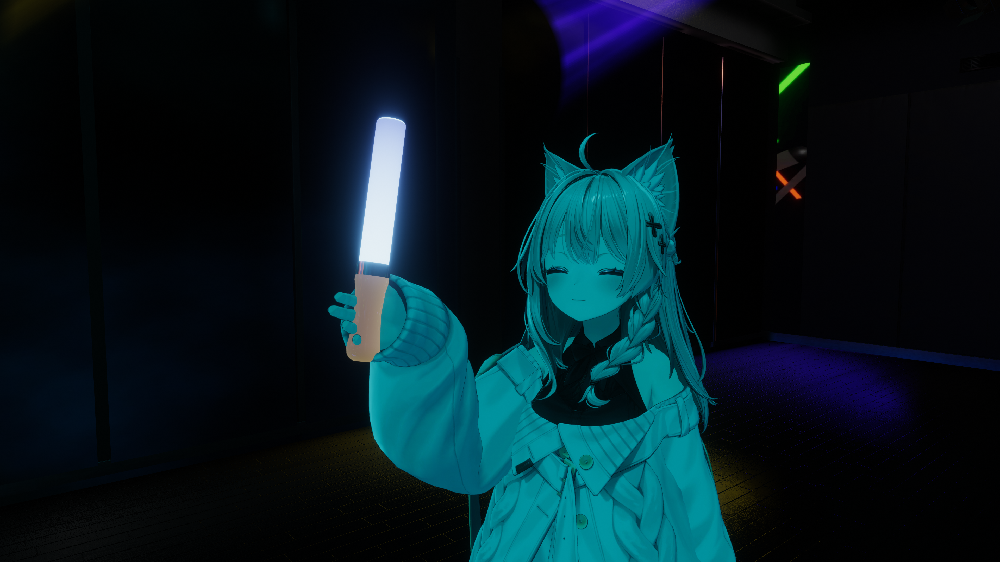
技術実装と空間設計
ライブ技術の統合
ライブハウス構造の最適化
- 演出に合わせて空間構造を調整
- 光の入り方や視線誘導を設計し、多彩なライティング表現を可能に
Timeline前提のシェーダー設計
- Timelineから直接制御しやすいよう、シェーダーのパラメータ構造を調整
- 発光・色変化・強度などをリアルタイム制御し、演出との高い同期性を実現
技術と演出の統合
- 映像 / ライティング / シェーダー / パーティクルを一つのTimeline上で統合制御
- オペレーション負荷を抑えつつ、高密度なライブ演出を実現
成果
-
イベント期間中
約27,000人 が来場
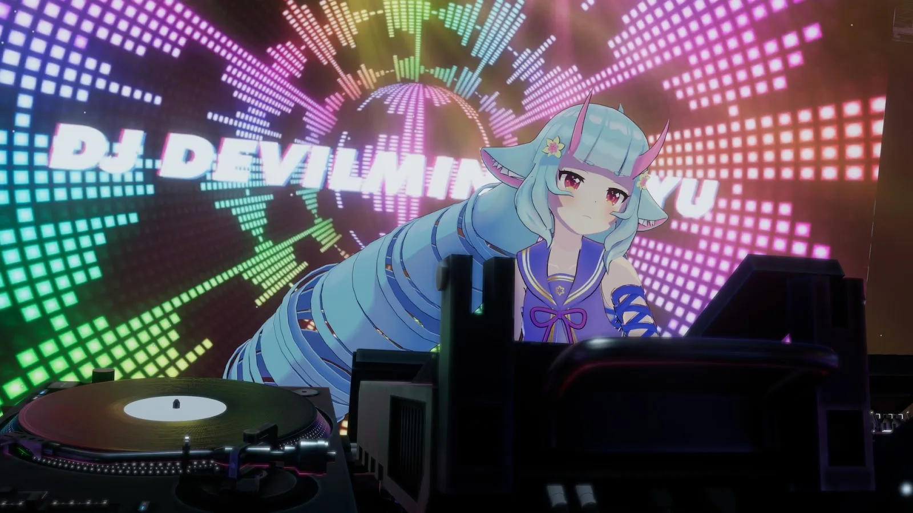
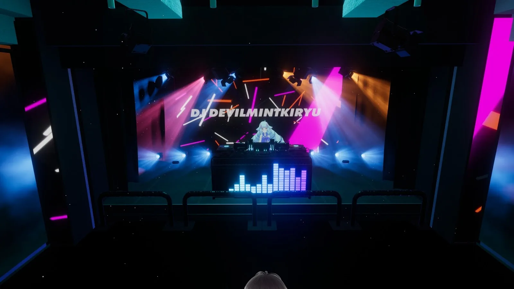
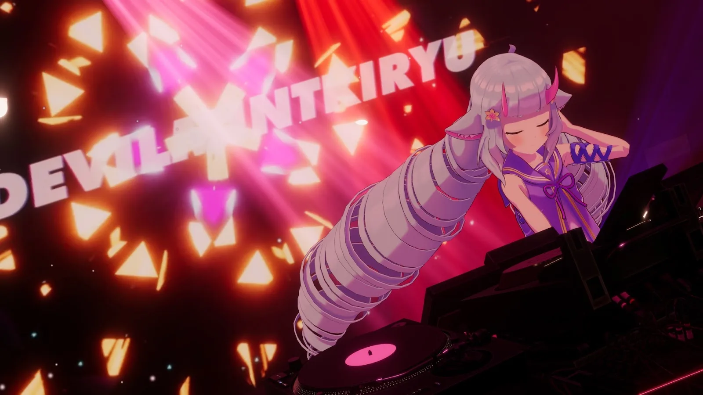
クラブアセット
Club4D
制作期間：約3か月 (2024.03 - 2024.05)
VRChat向けの商用のDJクラブアセット「Club4D」のシステム設計およびシェーダーの作成を担当。
ライティングの自動化により、誰でも簡単に操作できるオペレーション設計を目指しました。
高価格帯ながら多くのユーザーに支持され、VRChat内での利用にとどまらず、
地上波テレビ番組やアーティストのMVなど、
実際のプロダクトとして幅広いシーンで活用されています。
企画概要と課題設計
企画概要
「一人でも本格的なイベントを開催できる」をコンセプトとした、VRChat向け商用クラブアセットです。
従来のクラブワールドは、専属のVJや照明技師などのスタッフを複数人必要とするケースが多く、個人主催のイベントには運用コストの壁がありました。
本プロジェクトでは、システムによる自動化と直感的な操作性を両立。
商業レベルの演出クオリティを維持しながら、誰でも運用できることを目指しました。
【チーム構成】
課題設計
① 音楽とライティングの調和
多種多様な楽曲が流れるDJイベントにおいて、
楽曲のビートに合わせたライティングが求められた。
② 誰でも操作できる設計
スタッフ確保が個人主催のイベント開催において大きなネックになっていました。
少人数運用を前提に、誰でも扱える操作性が求められた。
③ 演者の感情とライティングの連動
画一的な自動演出では、演者のパフォーマンスや会場の盛り上がりが視覚に反映されず、
ライブ本来の没入感や一体感が損なわれるという課題がありました。
解決へのアプローチ
音楽と連動するシェーダー
AudioLinkライブラリを使用し、音の周波数を解析し、低音・中音・高音ごとにライティングの挙動を帰られるシェーダーを作成。
キックやスネア、シンセの変化に応じて光の強度や色を制御することで、音楽と一体化した演出を実現した。
直観的なUI
従来の照明コンソール（DMX等）のような複雑さを排除し、
「ボタン一つでのテーマカラー変更」や「盛り上がりに合わせたワンフェーダー制御」など、
VJ知識のない演者でもミスなく扱えるUI/UXの実現を課題としました。
演者のモーションを利用
演者のボーン（手の高さや位置）を検知して照明のボルテージを動的に変化させる仕組みを考案。
演者の身振りがそのまま会場の熱量に直結する設計を目指しました。
実運用プロダクトとしての実績
【販売実績】
Booth価格：7,000円（高価格帯）
累計販売数：262本
多くのユーザーに継続的に使用されている信頼のプロダクト
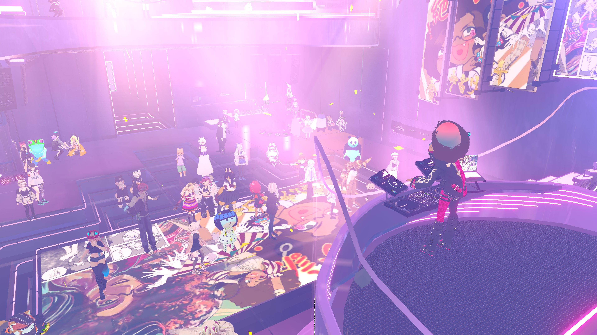
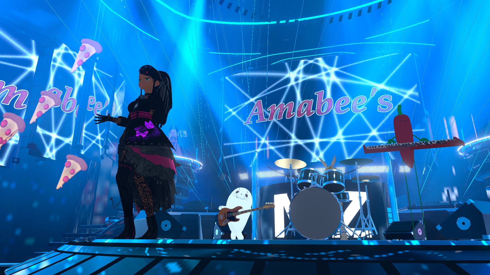
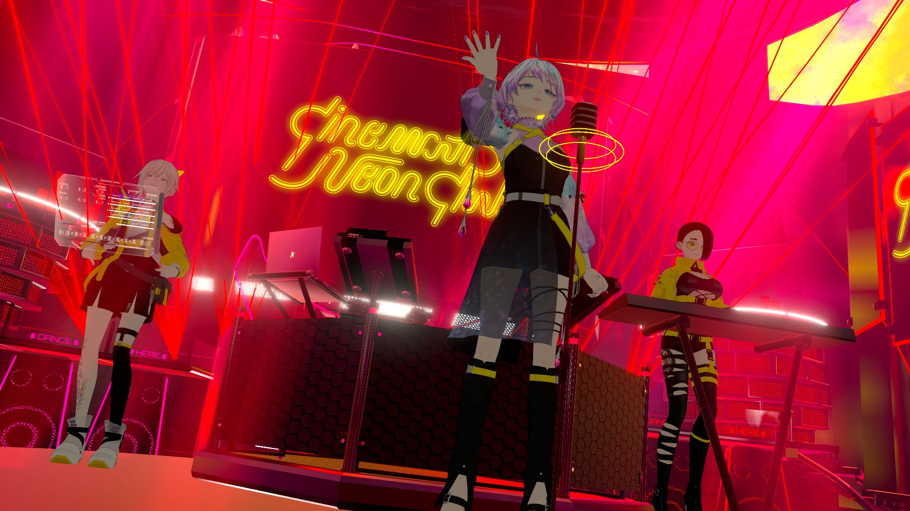
【メディア・外部実績】
-
テレビ朝日「金曜日のメタバース」
番組内にて紹介されました -
音楽ユニット MOSAIC.WAV
公式MVの撮影舞台として登場

大手前大学
オープンキャンパス
クライアント：大丸松坂屋、大手前大学、株式会社V
制作期間：約2ヶ月 (2025.12 - 2026.01)
本ワールドは、大手前大学のオープンキャンパス向けに制作したVRChatワールドです。
依頼内容に沿い、
エレベーター、螺旋階段、屋上庭園、茶室など、
異なるテイストの空間を一つのワールドとして違和感なく接続することを目指しました。
企画概要と要望への対応
企画概要
本プロジェクトは、大手前大学のオープンキャンパスをVRChat上で体験可能にするためのワールド制作プロジェクトです。 エレベーター、螺旋階段、屋上庭園、茶室など、異なるテイストの空間を一つのワールドとして違和感なく接続することを目指しました。
要望
- 屋上に講堂を作りたい（大手前大学の屋上の雰囲気を取り入れてほしい）
- 校舎吹き抜けのステンドグラスを再現したい
- 大学にある伝統的な茶室、竹立庵を再現したい
- コンクリート打ち放しを基調としたミニマルな建築表現の空間がほしい
屋上に講堂を作りたい
開放感のある屋上空間に、大学のシンボルとなるような講堂を設計。 周囲の景観と調和しつつ、イベント会場としても機能する、オープンキャンパスの目玉となる空間を目指しました。
校舎吹き抜けのステンドグラスを再現したい
ステンドグラスの再現
学園の象徴的なデザインであるステンドグラスを、精密なテクスチャ作成と透過シェーダーの組み合わせで再現。 時間や天候によって変化する色鮮やかな表情を追求しました。
差し込む光の表現
窓から差し込む光の筋（ゴッドレイ）を、軽量なメッシュと専用シェーダーで表現。 リアルタイムライトの使用を抑えつつ、モバイル環境でも印象的な空気感を生み出しています。
伝統的な和室と現代建築の融合
大学にある伝統的な茶室を再現したい
大学内に実在する伝統的な茶室を参考に再現を行い、空間の説得力を高めました。 畳の質感や障子から差し込む柔らかな光など、和の空間が持つ静謐な空気感を大切に制作しました。
コンクリート打ち放しを基調としたミニマルな建築表現にしてほしい
安藤忠雄風の建築表現を取り入れ、無機質なコンクリートの質感と、計算された光のコントラストが印象的な空間を構築しました。
VirtualDiceParty
深海博物館ル・リエー
クライアント：株式会社バーチャルパーティー
制作期間：約3ヶ月 (2025.07 - 2025.10)
VRChatのボードゲーム展示イベント「バーチャルダイスパーティー」の会場として制作したワールド。
クトゥルフ神話の海底都市“ルルイエ”をモチーフに、約60の展示エリアを持つ大規模構成を実現。
展示エリアの終わりには、潜水艦に乗り込み深海を探索するアトラクションを実装。
イベント概要と制作意図
Virtual Dice Party × 企画設計
バーチャルダイスパーティー
VRChat上で毎年開催されるボードゲームをテーマとした大型展示イベント。
多くのクリエイターが参加し、展示・体験・交流を目的としたワールドが集まります。
企画概要
本ワールド「深海博物館ル・リエー」は、イベントの展示会場として制作。
空、島、深海をテーマにした3つのワールドの内、海を担当。
クトゥルフ神話の海底都市「ルルイエ」をモチーフに、来場者が展示を巡りながら探索体験を楽しめる空間として設計しました。
約60の展示エリアを持つ大規模構成の中で、効率的な制作と没入感の両立を目指しました。
制作意図
探索すること自体が体験になる空間を目指し、以下のように設計。
- 同一構造の繰り返しによる制作効率の向上
- 展示内容や空間演出を段階的に変化させる構成
- 安心感から違和感へと移行する心理的導線の設計
同じ構造が、徐々に“異質”へ変わる体験設計
反復構造 × 恐怖演出設計
同じ部屋の比較（初期→後半） / 展示物の変化 / 照明・色の変化
設計意図
同一構造の繰り返しをベースに、
徐々に違和感を増幅させることで恐怖体験へ転換。
演出手法
- 展示物を段階的に変化（正常 → 異形）
- 照明の色・明度を変化
- 空間の密度や配置を歪ませる
体験効果
- プレイヤーが“気づく恐怖”を誘発
- 探索の継続動機を維持
- 物語的な没入感を強化
Timelineを使用したライド体験
コンセプト
最終エリアでは、潜水艦に乗り込み
深海の沈没船を探索するライド型アトラクションを実装。
プレイヤーは「クトゥルフの呪いを解くための財宝」を探す旅へと導かれます。
展示空間で積み重ねた違和感や伏線を回収し、
探索そのものが物語へと変化する体験として設計しています。
Timelineによる演出制御
- Unity Timelineを用いて演出を一括制御
- Cinemachineによる潜水艦の移動
- カメラ、エフェクト、音声を同期
演出設計
潜航、沈没船の発見
潜水艦に乗り込み
深海へ潜航
探索
暗闇に包まれた
船内を進行
クトゥルフの財宝
一時の安堵
危機と解放
突如発生する
未知の恐怖
探索 → 発見 → 安堵 → 崩壊
緩急のある構成で、感情の起伏を設計
黒猫洋品店
イノセント・ガーデンドレス
クライアント：黒猫洋品店合同会社
制作期間：約1ヶ月 (2025.06-2025.07)
黒猫洋品店合同会社様よりご依頼を受け、
イラストをもとに3D衣装モデルの制作を担当しました。
デザインイラストの繊細なニュアンスを3Dで再現しつつ、
VRChatでの運用に適した軽量・高機能な設計を実現しました。
再現性と立体化の追求
元イラストと完成モデルの比較
元イラスト
完成モデル
原案の解釈
河地りん氏(@gingatrain814)によるイラストの持つ、透明感のある色彩とやわらかな雰囲気を損なわないよう、
3D化において質感の表現に重点を置きました。
イラスト特有の繊細なニュアンスを維持しつつ、3D空間においても魅力が伝わるよう再構成しました。
フィードバックと改善
① 形状の再解釈
- デザイナーとのやり取りを通じて、
三面図だけでは解釈が難しい構造について、 認識をすり合わせながら形を決めました。 - イラストでは曖昧になりがちな構造を明確化し、立体として違和感のない形状にモデリング。
② テクスチャ・質感の強化
【FB】テクスチャ表現をもう一段リッチにしたい
- マットキャップ追加による金属感の表現
- ベルベット・レースなど素材ごとの質感を調整
リギングと揺れ物
リギング・揺れ物設定
プレーヤーが動くたびに楽しくなるようにできるだけ多く揺れものを実装。
負荷の観点からクロスシュミレーションを使わず、ボーンでの揺れのみの実装にした。
スカート、フリル、蝶の飾り、が揺れるように 計17もの親ボーンに揺れものを設定。
素材に合わせて、揺れの強さなどのパラメーターも調整した。
スカートの貫通対策
VRで動いているプレイヤーがどんなポーズをとっても、スカートが脚を貫通するのを防止する必要があった。
コライダーとコンストレイントを組み合わせた貫通対策を実施。
スカートの後ろ側は、コライダーを使い、脚との接触判定により貫通を対策し
スカートの前側は、コライダーをすり抜けてしまうためコンストレイントを使い、両脚のボーンと回転をリンクさせることで、
脚を前に出した時、座った時の脚の貫通を防止した。
最終調整と完成
③ ユーザーが編集しやすい仕様
- 白黒テクスチャにマテリアルの設定により色変更できように
- パーツ単位でマテリアルを分け色変更を容易に
品質とカスタマイズ性を両立した設計を実現
完成衣装ギャラリー
Virtual Market Keenブース
靴のモデリング
クライアント：株式会社HIKKY、キーン・ジャパン合同会社
制作期間：VketSummer:2024.06、VketWinter:2024.10
Virtual Market keenブースにて展示する靴のモデリングを担当しました。
頂いた写真を元にblenderでモデリング、SubstancePainterでテクスチャを作成。
靴の色をユーザーが自由に変えられるギミックに対応できるように、独自シェーダーの作成も行いました。
クライアントからの評価により、単価アップの上でVket2024Winterでの依頼を獲得しています。
リアルな素材表現とモデリング設計
制作・技術
リアルな素材表現の再現 (Substance Painter)
- Substance Painterを使用し、実在する靴の質感を再現
- ラバー、布、ステッチなど素材ごとの違いを表現
- 使用感や微細なディテールもテクスチャで再現
運用を考えたシェーダー設計
応用・価値
カラーバリエーション対応シェーダー
- 靴の色を自由に変更可能なシェーダーを実装
- 複数カラーバリエーションを1モデルで対応
【メリット】
差分モデル不要 → データ軽量化
イベント・販売用途での展開が容易
クライアント評価と継続案件
- 初回案件後、単価アップで再依頼を獲得
- 品質と対応力の高さが評価された強固な実績
ギャラリー
【画像引用】
akiRAM(@akiram)
かーの(karnoroid)
雨野ちはれ(@ameno_chihareVR)
代表商品
花鳥風月巫女ドレス BOOTH URL
【開発ストーリー】
初回リリース時は売上が伸び悩むも、BOOTHで売れている衣装を分析。デザインと仕様を大幅にブラッシュアップしました。
【改善ポイント】
- 黒を基調としたカラーリングへ変更
- 対応アバター数を大幅に増加
- ユーザー層に合わせたデザイン調整
【結果】
ユーザーに刺さるプロダクトへ改善。
販売数：130超え
デスクトップフルトラ BOOTH URL
【概要】
mocopiを使用し、OSC通信を通してVR機器なしでVRChatと接続するUnityネイティブアプリを開発。
【技術ポイント】
- OSCによるリアルタイム通信
- Unityでの入力処理・アバター制御
- VR機器非依存のトラッキング環境構築
【実績】
Twitterいいね数：2300超え
販売数：750本超え
企画概要
バレンタインをテーマにした衣装を3Dモデルで制作しboothにて販売しました。メンバーが着用しやすく、イベントなどでも映えるようなデザインを意識しました。
デザイン画
Pinterestなどで参考資料を探し、SDキャラでいくつかのデザインを試す。
その中から1番かわいいと思えたデザインを元に、実際の等身で前後のデザイン画を作成しました。
モデリング
Blenderを使用した衣装のモデリング。
VR環境ではユーザーが間近で衣装を見る機会が多いため、
できる限り荒い部分が見えないよう、ポリゴン数を多くして制作しました。
また購入した人が満足できるよう、小物などディティールをできる限り細かくモデリングしています。
総ポリゴン数: 85202
Zbrushにてディティールスカルプト
ZBrushを用いて服のシワなどのディテールをスカルプティング。
作成したハイポリゴンモデルはその後のSubstancePainterでノーマルマップにベイクします。
UV展開
ユーザーの編集しやすさを考慮し、
できる限り左右対称になるように、そしてオブジェクト中心にシームが出ないようにUVマップを作成しました。
ボーン
UnityのHumanoidボーンに準拠してボーンを作成。 また、服の揺れ物用にボーンを追加し、動きが破綻しないようにウェイトペイントを調整しました。
SubstancePainterでテクスチャ作成
Substance 3D Painterによるテクスチャ制作。
ハイポリゴンモデルを用いてベイクした後、
パーツごとにフォルダ分けし、装飾などのディティールを追加。
その後、ベイクしたAOとハンドペイントにより影を作成。
最終的に、BaseColor、Normal、Roughness、Metallicマップを出力。
商品サムネイル
boothの商品サムネイル用に作成した画像。
商品の世界観を意識したような背景や、アバターがポーズを取った時にどの様な見た目になるかが分かる画像を作成しました。
ライブ写真
バーチャルイベントやライブ会場での着用スナップショット。実際のライティング環境下でのマテリアルの見え方を確認できます。
YouTube
衣装の宣伝用に作成したMV。
企画概要
本モデルは「ゆめかわ」をテーマに、淡い色味を基調としながら、うさぎをモチーフにした装飾を取り入れることで、可愛らしさを表現しています。
デザイン面では、リボンやフリル、小物などの装飾を多めに配置し、通常の衣装よりも情報量のあるビジュアルに仕上げました。
単に可愛いだけでなく、どこか不安定さや儚さを感じさせる“病み”の要素も加えることで、甘さの中に影のあるキャラクター性を持たせています。
デザイン
キャラクターの魅力を引き出すため、衣装や顔立ちの詳細なデザイン画を制作。
後に、ゆめかわ感を出すためにコートは黒から白に変更しました。
モデリング
近くで見ても粗さが出ないようにポリゴンを
キャラクターの素体から衣装までモデリングしました、。肘や指などの折れる部分は破綻が出ないようなメッシュ割にしました。
ポリゴン数
素体(体と顔):21,158、髪:6,524、衣装:45,759
フェイスモデリング
アバターの印象を決定づける顔のモデリング。
様々な表情（ブレンドシェイプ）を作成できるようトポロジーを最適化しました。
テクスチャ
多くの装飾品の色を付ける必要があったため、頂点カラーを活用しSubstance Painterにてベイク。
その後Substance Painterにて基本的な影をつけた後は3DCoatにてハンドペインティングでディティールを追加しました。
リギング
UnityのHumanoid基準のリギングをしました。
また、自然な揺れを表現するために多くの、揺れ物用ボーンを入れてあります。
緑:Humanoidボーン、黄色:揺れ物用ボーン、赤:背中のうさぎ人形
完成サムネイル
企画背景・制作意図
【企画背景】
「VRChatという場なら新しい音楽体験を作れる」と感じたことも活動のきっかけです。
楽曲制作だけでなく、Unityを使用したライブ演出や映像演出も行い、VRならではのライブ体験を制作してきました。
【メンバー】
作詞作曲編曲、映像制作
パンダの格好をしたDJボーカル、作詞
透き通る歌声が特徴の女の子。撮影、映像制作
アニメ好きなアンドロイド、音楽性の違いにより脱退。【楽曲制作】
ダンス系のジャンルを中心にKawaii Future Bass、Houseなどのジャンルを取り入れた楽曲を制作。
作曲→編曲→作詞→ボーカル録音→ミキシングというワークフローで楽曲制作を行っておりました。
MV制作・ライブ演出
ライブ演出
どのようなライブ会場でも演出が表示できるように、アバター内に演出を埋め込みます。
ライブでの様子
【画像引用】ninf@ninf、IWieldKeys VRイベントカメラマン @IWieldKeys_VRC
MV制作
楽曲の魅力が伝わるよう、MVを制作しております。
完成したMV
Gallery
Sugar*3 ポスターイラスト
2022年
バーチャルアイドルグループ「Sugar*3」のポスターとして制作したイラスト。
スイーツをテーマにした世界観の中で、キャラクターの個性とグループとしての統一感を両立させることを意識しました。
手前に配置したデザートをアクセントに、視線が自然とキャラクターの表情へと集まる構成としています。
眠れる森の入口
2020年
コミッションにて依頼され制作したイラスト。
巨大な樹木と滝に囲まれた“眠れる森の入口”をテーマに、
キャラクターと環境のスケール差を強調し、空間そのものに意思が宿るような演出を意識しました。
約束の街へ
2020年
自作ゲーム用のコンセプトアート
巨大な時計塔を中心に広がる都市を舞台に、旅立ちの瞬間を描いたイラスト。
手を取り合う二人を前景に配置し、これから始まる物語と関係性を強調しました。
デッサン モリエール
2019年
自室にあるミニチュアのモリエール胸像のデッサンです。
森に還る聖域
2019年
自作ゲーム用のコンセプトアート
自然に侵食されつつある遺跡を舞台に、「森に還る聖域」というテーマで描いたコンセプトイラスト。